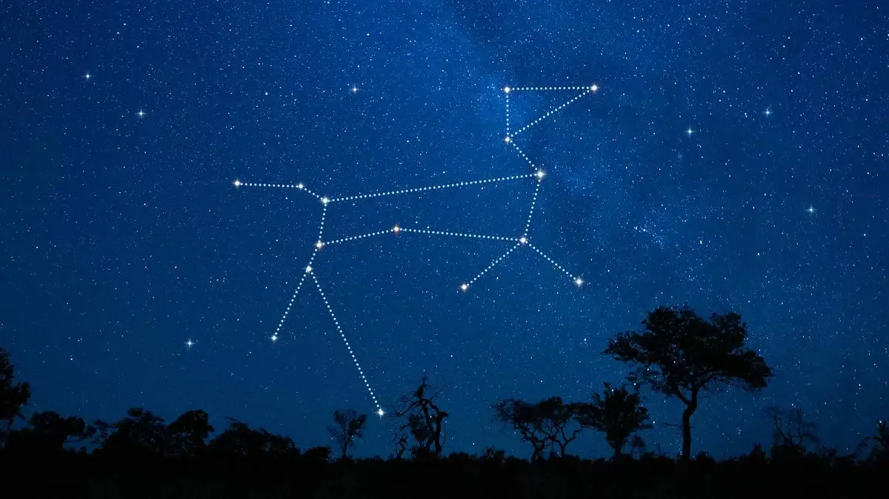

🎯Nhiệm vụ: Tìm hiểu, suy đoán, và khám phá thú cưng của Thợ Săn!
Chó đang đi săn....0%

Nếu thợ săn đứng một mình, chắc chắn gã ta đã thua trước con trâu đó...chỉ tiếc là ngài còn một trợ lí đắc lực phía sau...có lẽ trợ thủ này được tạo ra từ những phần tam giác và hình chữ nhật!

Chòm sao Đại Khuyển (Canis Major)Bạn lại làm được lần nữa rồi! Chúc mừng bạn đã giải mã thành công chòm sao Đại Khuyển (Canis Major) — thú cưng trung thành của thợ săn Orion.